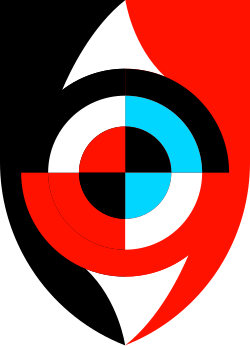

א
כפיפות מקצועית
בה"די זרוע יבשה כפופים מקצועית לחייליות המקצועיים.

בחרו נושא ללמידה
נבין כיצד מתקיימת הכפיפות המקצועית, מי הם בעלי התפקידים המעורבים ומהם עקרונות העבודה בתחום המקצועי־תורתי.
הגדרת יחסי הגומלין בתחום ההדרכה והלמידה בין המפקדה הממונה החיילית לבה"ד.
בה"די זרוע יבשה כפופים מקצועית לחייליות המקצועיים.
בין החיילות ובין הבה"ד שמעליו מתקיימים יחסי גומלין, שבהם הבה"ד מקבל דירקטיבות מקצועיות.
מתקיימים יחסי גומלין גם בתחומים כגון פיתוח כ"א, ניהול גרף ההכשרות, ניהול משאבים, הדרכה, ארגון ותקינה, תחום הנפגעים ועוד.
נוהל זה מפרט רק את הנושאים בהם מתקיים יחסי גומלין בין הבה"ד לחיל בתחום ההנחיה המקצועית־תורתית.
הקבלת הנחיות, הוראות ודרקטיביות הקשורים לסוגיות תורתיות, וכן סוגיות בעלות משמעות לפיתוח מקצועי ארוך טווח.
תפקידו של החיל הינו להנחות, לחנוך ולבקר את פעילות הבה"ד בתחום המקצועי־תורתי.
הנחיות שוטפות בתחום המקצועי־תורתי בהכשרות.
בנושאי אישור תיקי יסוד, אישור כשירויות, הטמעת מאמנים, ביקורות חייליות.
אישור תכולות הדרכה, הטמעת אמל"ח, חניכה שוטפת ובקרות.
הנחיה, עדכון וחניכה בתחום המקצועי־תורתי.
מפקדת החיל נושאת באחריות בתחום ההדרכה במספר נושאים מוגדרים:
| מס"ד | נושא | פירוט התכולה | עיתוי עדכון ותיקוף |
|---|---|---|---|
| 1 | כתיבת תפיסת הדרכה חיילית | כתיבת תפיסה המתארת את רצף פיתוח ושימור כשרות הלוחם והמפקד מההכשרה בבה"ד דרך שירותו הסדיר בענף ועד לשירותו במילואים. תפיסת ההדרכה תשמש את כלל המפקדים בחיל. | אחד לשנתיים |
| 2 | כתיבת תו"ל לרבות ניתוחי תפקיד וכשירויות (*בהתאם לנוהל פיתוח הכשרה חדשה 2.1) | כתיבה של הגדרת יעוד תפקיד ומרכיבי תפקיד לכל אחד מבעלי התפקידים כחלק מספרות התו"ל, כתיבת כשירויות לכל בעל תפקיד ומסגרת עד רמת הענף. כתיבת התור והכשירויות ישמשו את הבה"ד להמשך פיתוח ועדכון ההכשרות. | אחת לשלוש שנים |
| 3 | אישור תיקי יסוד (*בהתאם לנוהל תיקי יסוד (2.2)) | אישור תוכניות הכשרה במסגרת תיק יסוד | לכל הכשרה חדשה או בעת שינוי ברצף או משך ההכשרה במידה ולא חל שינוי משמעותי יאושר התיק אחת לשלוש שנים |
| 4 | הובלת הלמידה המבצעית | ביצוע מופעים לשיתוף בלקחים מבצעיים כתוצאה מפעילות מבצעים, אימונים ולקחים מקצועיים שעולים בהכשרות. | אחת לשנה לכל היותר |
| 5 | ייזום והקמת מאמנים (*בהתאם לנוהל קליטה והטמעת מאמנים 5.1) | ביצוע תהליך לייזום ופיתוח מאמנים עבור ההכשרות והאימונים בשיתוף בעלי תפקידים רלוונטיים מבה"ד. כתיבת עקרונות חייליים להטמעת מאמן לרבות הכשירויות שעליהם המאמן נותן מענה והאופן בו נדרש לשלבו בהכשרות - משפר כשירויות/מקנה כשירות. | שוטף |
| 6 | הטמעת אמל"ח חדש בהכשרות (*בהתאם לנוהל קליטת אמל"ח ביחידות 5.2) | ביצוע תהליך הטמעה של אמל"ח כדש לרבות כתיבת כשירויות לאמל"ח החדש, הגדרת אופן השגת הכשירות לאמל"ח, שיתוף הבה"ד בתהליך הפיתוח ובגרעין ההטמעה מול התעשייה. הנחיית גאנט להטמעת האמל"ח. | |
| 7 | הנחיות מקצועיות שוטפות | כתיבה והפצת הוראות מקצועיות שוטפות משלימות לספרות התו"ל שתכליתה חידוד או עדכון בתהליך המבצעי. וכן קליטה של אמל"ח חדש. | שוטף על-פי צורך |
| 8 | אישור תכולות הדרכה (*בהתאם לנוהל תיק מדריך 2.4) | אישור תכולות ההדרכה: מארזי הדרכה, מבחנים, תיקי תרגיל | אחת לשנתיים |
| 9 | בקרת איכות ההכשרות בבה"ד | ביצוע בקרות לבדיקת הטמעת התו"ל, ההוראות המקצועיות, האמל"ח והמאמנים בהכשרות. בקרה על הרמה המקצועית של המפקדים. בקרה על איכות העברת התכנים המקצועית ונושאים נוספים להחלטת מפקד החיל. | אחת לשנתיים |
| 10 | קבלת החלטות שוטפת עבור ההכשרות | ביצוע דיונים שוטפים להצגת לקחי הכשרות לצורך קבלת החלטות מקצועיות עבור ההכשרה. | אחת למחזור/אחת לתקופה שתקבע ע"י מפקד החיל |
כלל המופעים הפורמאליים המתבצעים ברשות החיל יתועדו באחריות מוביל המופע שיקבע בחיל.
כלל הידע על סטאטוס אישור תיקי יסוד ותכולות הדרכה ינוהל על ידי ענף כשירויות בחיילות.
ספרות מקצועית, לרבות כשירויות והוראות מקצועיות יונגשו לכלל המפקדים מדרג מ"פ ומעלה בבה"ד באחריות אג"ם הבה"ד או פונקציה אחרת שתוגדר על־ידי מפקד הבה"ד.
על בעלי התפקידים בבה"ד אשר היו שותפים למופעים החייליים, להחזיק בסיכומם.